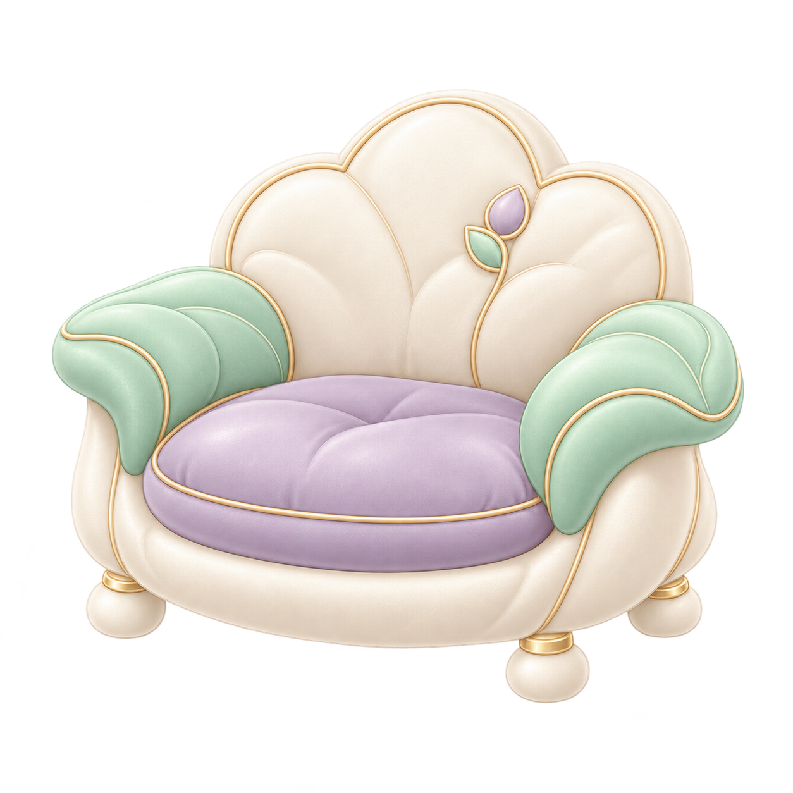

雲の読書チェア：立体と接触面の見本
保存済みの椅子原画を参考に、厚い薄紫の座面・雲形の背・ミントの肘・短い脚を立体にしました。点は椅子の面上にある位置です。身体との結び付け、座る姿勢、荷重、実際の入手・配置・保存はまだ確認していません。原画に見えない後ろの脚や背面は、この見本で新しく設計した形です。
描画の準備中
床・木・建物・光は保存済みの村と同じ形状です。参考姿は原8種のmilne赤ちゃんの正面2D1枚で、通常の1.65フレーム単位を使った横並び比較だけです。最低alpha行の配置は、両足の解剖学的な接地や着座fitの証明ではありません。

形状・床・接触面の検査値
保持した未加工の椅子原画

原画の再生成や新しい原画としての加算はしていません。